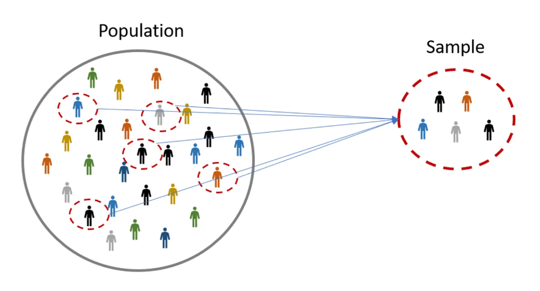
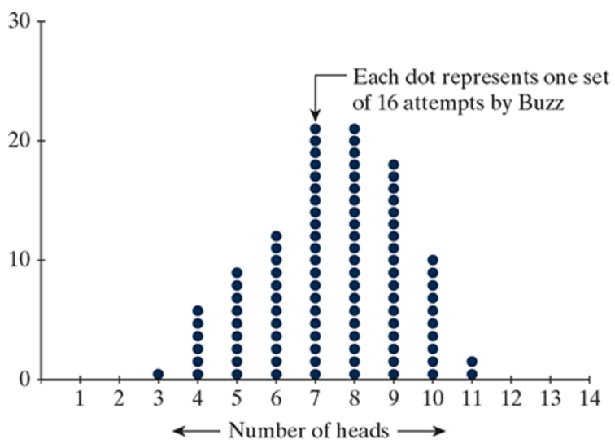

Section 1.1
Introduction to Chance Models
Section 1.1 Learning Objectives
Know the difference between a parameter and a statistic.
Identify whether or not study results are statistically significant and whether or not the chance model is a plausible explanation for the data.
Recall…
- Statistics allow us to estimate something about a large population
- Statistical significance
- Were our results likely by random chance?
- Is there an underlying cause?
- Probabilities
Interested in the long-run probabilities
Cars vs. Goats
More Definitions!
Population
The complete collection of all objects that are of interest for a given scenario.
- Ex: All UNL students, everyone in the United States.
Parameter
The long-run numerical property of the population.
Sample
A subset of observational units from the population of interest
Sample Size
The number of observational units in the sample
- We denote sample size using “n”
Statistic
The numerical property summarizing the result of the sample
Population vs. Sample

Population ⟾ Parameter
A parameter is based on a population. Parameters are generally difficult or impossible to obtain.
Sample ⟾ Statistic
A statistic is based on a sample. A statistic can always be obtained.
Helper vs. Hinderer Example
Population: All babies in the United States
Parameter: Long run proportion of babies that choose the helper toy (unknown!)
Sample: Babies that participated in the experiment
- Sample size (n = 16)
Statistic: Observed proportion of babies that chose the helper toy (14/16)
A note on wording…
“Long-run” and “true” can be used interchangably
Long-run proportion = true proportion
Long-run average = true average
In either case, we are describing a parameter
Doris and Buzz Example
Doris and Buzz
In 1964, two dolphins (Doris and Buzz) were trained to push one of two buttons in a pool in reaction to a light. If the light flashed, the dolphins pushed the button on the left to get a fish. If the light was constant, the dolphins needed to push the button on the right.
Once they learned this behavior, the dolphins were separated by a wall (only Doris could see the light; only Buzz could push the buttons). To get a fish, Doris would need to communicate with Buzz.
The researcher, randomly deciding to make the light shine constant or flash, tested the dolphins’ ability to communicate.
Out of 16 attempts, the dolphins pushed the correct button 15 times.
Doris and Buzz: Six Steps of Statistical Investigation
1. Ask a research question.
- Can dolphins communicate in an abstract manner?
2. Design a study and collect data.
Observational units?
- How many? (Sample size)
Variable of interest?
- Categorical or quantitative?
3. Explore the data.
Out of 16 attempts, the correct button was pushed 15 times.
What is our sample? Observed statistic?
4. Draw inferences beyond the data.
The long run proportion of correctly pushing the button is unknown
- This is our parameter
Our observed statistic helps estimate the parameter
5. Formulate conclusions.
Were our results purely random? (Buzz was just guessing)
Was there an underlying cause? (Buzz and Doris were communicating)
6. Look back and ahead.
- How could we improve this study?
How can we decide if our results are statistically significant?
We use the “Three S” Strategy
1: Statistic
Compute a statistic from the sample data.
2: Simulate
Develop a chance model. Repeatedly simulate values of the statistic under this model.
3: Strength of Evidence
Decide if the observed statistic was likely based on the simulation.
Doris and Buzz: Three S Strategy
1. Statistic
Compute a statistic from the observed data.
- Called our observed statistic.
Doris and Buzz example:
The proportion of times Buzz pushed the correct button
- 15/16 = observed statistic
2. Simulate
Develop a “chance model” (aka, a null model)
Chance model = what we would expect to happen at random, assuming there is no underlying cause
Under the chance models, repeatedly simulate values for our observed statistic.
This develops a sampling distribution (aka, a null distribution)
How might we simulate Doris and Buzz’s experiment?
3. Strength of Evidence
Based on our simulated values, is our observed statistic likely?
If the observed statistic seems likely:
The chance (null) model was possible.
Our results could’ve happened by random chance alone
If the observed statistic seems unlikely:
Our chance (null) model likely wasn’t possible
There’s probably some underlying cause
Connecting Simulation to a Real Study
We could simulate this study by flipping a coin
Coin flip = a guess by Buzz
- Heads = a correct guess
- Tails = an incorrect guess
Chance of heads = 1/2; probability of pushing the correct button if Buzz is guessing
One repetition = one set of 16 simulated attempts by Buzz
- Flipping the coin 16 times = one repetition
Simulating a Null Distribution Activity
Using a simulator, simulate 16 coin tosses
Record the number of heads
Mark an “X” above the number of heads you got
What does each “X” represent?
Simulation using the Applet
Now we’ll carry out simulation using the Applet
What is our chance (null) model?
- Adjust Probability of Heads
How many trials took place in the study?
- Adjust Number of Tosses
The more samples the better! Run the simulation 1000 times.
- Adjust Number of Repetitions
Simulation using the Applet
At what point would we be convinced Buzz isn’t guessing?
If Buzz correctly guessed…
- 10/16 times?
- 12/16 times?
- 14/16 times?
